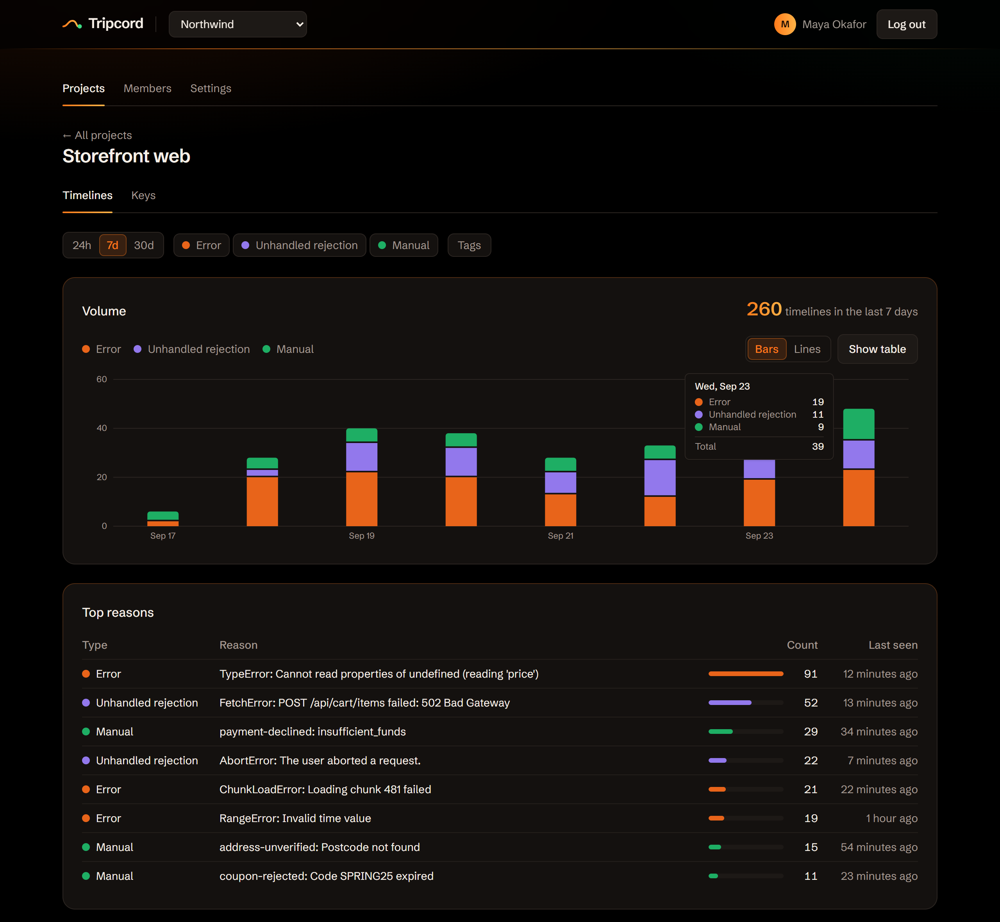

No noise, pure signal.
You choose what goes on the timeline. When something breaks, or a moment you care about happens, Tripcord sends the steps that led there.
Why did this break? How did people get here? One timeline answers both.
-
track("cart.viewed", { items: 3 })0.0sYour code marks a step
-
"Checkout button"4.2sA click on a button marked
data-trace="Checkout button" -
track("checkout.step", { step: "shipping" })9.8sAnother step you chose to record
-
TypeError: Cannot read properties of undefined (reading 'zip')11.3sThe error trips the cord, and Tripcord sends these four steps
How it works
-
1
Install the client
npm i @tripcord/js -
2
Point it at your project
Call
init()with the endpoint and the project's API key. -
3
Mark the moments that matter
track()adds a step to the timeline.capture()sends the timeline on purpose, for a signup or a checkout. Errors and unhandled rejections are captured on their own.
import { init, track, capture } from "@tripcord/js";
init({
endpoint: "https://app.tripcord.dev/v1/timeline",
apiKey: "tpk_…",
});
track("checkout.step", { step: "shipping" });
capture("checkout.completed");See what led there
Captures over time, the reasons that come up most, filters by tag, and every timeline step by step.

Safe to run in production
- Your app comes first
- The client never throws and never retries. If Tripcord is down, your users don't notice.
- URLs are trimmed
- By default, page URLs keep only the origin and path. Query strings and fragments, where tokens hide, are dropped.
- You choose what's recorded
- Apart from errors, nothing goes on the timeline unless your code puts it there.
- Kept for 30 days
- Timelines older than that are deleted automatically.
Open source, and easy to leave
Tripcord is MIT licensed. Run the same image on your own server, or use the hosted beta. Either way, you can export any project as NDJSON or delete it whenever you like.